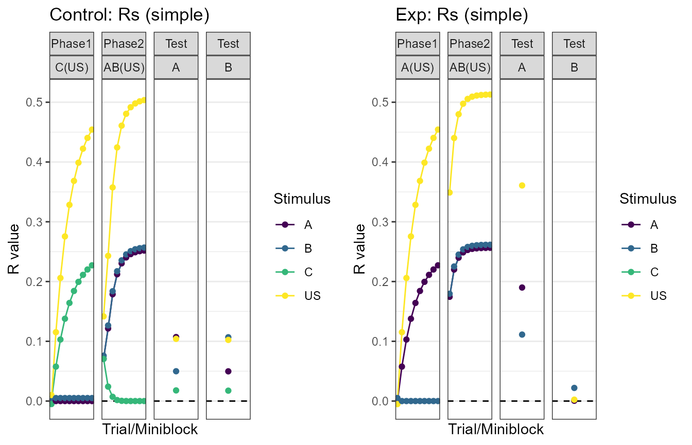
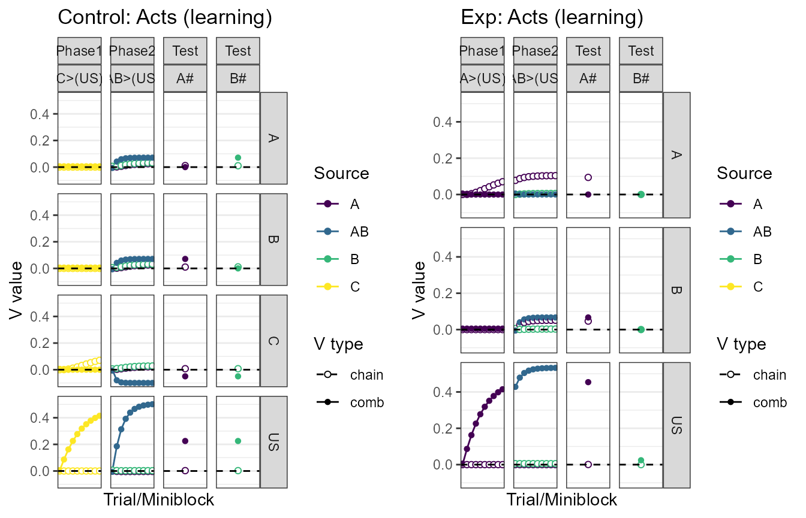
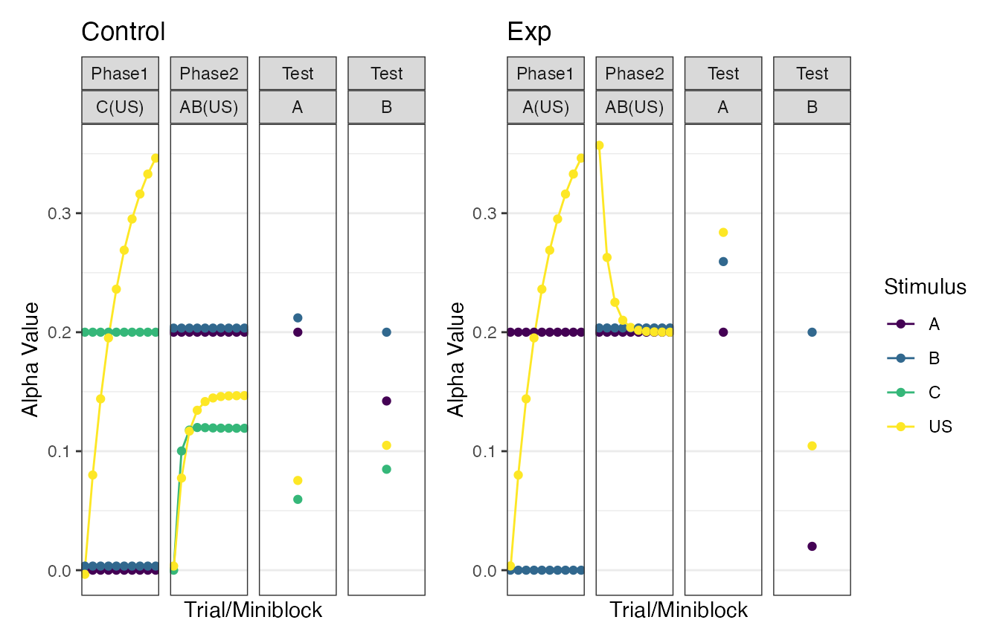

Using heidi in R
Ingredients
To successfully simulate you only need a data.frame specifying the groups, phases, and trials of the experiment, and (optionally) a data.frame with salience parameters for all the stimuli in the experiment.
The design data.frame
In the so-called design data.frame the user specifies their experimental design. A few rules about the this data.frame:
- Each row represents a group.
- Its first column contains the group labels.
- The remaining columns are organized in pairs. The first column in each pair specifies the trials to give in the phase, whereas the second column of each pair specifies whether the trials within that phase should be randomized.
Let’s build a design matrix for a blocking experiment.
my_blocking <- data.frame(Group = c("Exp", "Control"),
Phase1 = c("10A(US)", "10C(US)"),
R1 = c(FALSE, FALSE),
Phase2 = c("10AB(US)", "10AB(US)"),
R2 = c(FALSE, FALSE),
Test = c("1A/1B", "1A/1B"),
R3 = c(FALSE, FALSE))
my_blocking
#> Group Phase1 R1 Phase2 R2 Test R3
#> 1 Exp 10A(US) FALSE 10AB(US) FALSE 1A/1B FALSE
#> 2 Control 10C(US) FALSE 10AB(US) FALSE 1A/1B FALSEA few observations about the trial notation: 0. Trials are preceded by a number. That number represents the number of times that trial will be given in each phase. “10A(US)” means that the “A(US)” trial will be given 10 times. 1. The presence and absence of the unconditioned stimulus is not denoted with the traditional “+” and “-” symbols. Instead, we use parenthesis to denote “complex” stimuli. These can be thought of as an element with a complex name (i.e., with more than one character). As such, “(US)” specifies a single element to represent the US. 2. The “/” character is used as a trial separator (it does not imply randomization by itself). Thus, “1A/1B” specifies that a single “A” trial and a single “B” trial will be given during that phase. Recall that randomization of trials within a phase is specified by the column after it (above, R1, R2, and R3).
If you ever want to check if your trials string will work with the simulator, you can use trial_parser. The function returns a list with trial_names (the name of the trial), trial_repeats (the number of times each trial is given), trial_list (a list with the elements on each trial), is_test (a list specifying whether the trial does not result in learning), and a vector of stimuli (the stimuli found in the trial string).
trial_parser("AB/10AC") #not specifying a number of AB trials. Bad practice!
#> $trial_names
#> [1] "AB" "AC"
#>
#> $trial_repeats
#> [1] 1 10
#>
#> $trial_list
#> $trial_list[[1]]
#> [1] "A" "B"
#>
#> $trial_list[[2]]
#> [1] "A" "C"
#>
#>
#> $is_test
#> $is_test[[1]]
#> [1] FALSE
#>
#> $is_test[[2]]
#> [1] FALSE
#>
#>
#> $stimuli
#> [1] "A" "B" "C"
trial_parser("10AB(AB)(US)") #considering a configural cue for elements AB
#> $trial_names
#> [1] "AB(AB)(US)"
#>
#> $trial_repeats
#> [1] 10
#>
#> $trial_list
#> $trial_list[[1]]
#> [1] "A" "B" "AB" "US"
#>
#>
#> $is_test
#> $is_test[[1]]
#> [1] FALSE
#>
#>
#> $stimuli
#> [1] "A" "B" "AB" "US"The parameters data.frame
You can run a simulation with only an design data.frame (the simulation function will use default salience values for the stimuli). However, if you want specific salience values for the stimuli in your experiment, you should pass a data.frame with parameters. Let’s specify those for our experiment.
my_pars <- get_params(my_blocking, default_par = .2) #Note we can quickly get a table with parameters directly from the design data.frame; a good way to check we are going in the right direction
my_pars$Alpha[my_pars$Stimulus == "US"] <- .4
my_pars
#> Stimulus Alpha
#> 1 A 0.2
#> 2 US 0.4
#> 3 B 0.2
#> 4 C 0.2Additional options
The final ingredient is a list with simulation options. We can get a default one with get_heidi_opts, and modify them accordingly.
my_opts <- get_heidi_opts()
my_opts$iterations <- 10
my_opts
#> $iterations
#> [1] 10
#>
#> $miniblocks
#> [1] TRUESimulating
And we can finally simulate the model with run_heidi. By default, the function returns a list with the relevant data. Let’s see.
my_sim <- run_heidi(design_df = my_blocking,
param_df = my_pars,
options = my_opts)
names(my_sim) #contains information about weights (ws), v-values (vs), r-values (rs), and alphas (as)
#> [1] "ws" "vs" "rs" "as"
head(my_sim$vs)
#> # A tibble: 6 × 9
#> group trial phase trial_type v_type s1 s2 block_size value
#> <fct> <int> <fct> <fct> <fct> <fct> <fct> <dbl> <dbl>
#> 1 Control 1 Phase1 C(US) chain_v C US 1 0
#> 2 Control 1 Phase1 C(US) comb_v C US 1 0
#> 3 Control 2 Phase1 C(US) chain_v C US 1 0
#> 4 Control 2 Phase1 C(US) comb_v C US 1 0.0864
#> 5 Control 3 Phase1 C(US) chain_v C US 1 0
#> 6 Control 3 Phase1 C(US) comb_v C US 1 0.162Plotting
But, we rarely want the raw data. If you are like me, you will want to see some plots. Let’s use make_plots to do create some plots, and patch_plots to display them. Here they are, paired side by side.
my_plots = make_plots(my_sim)
plot_names = names(my_plots)
plot_names
#> [1] "Control: Rs" "Control: Ws" "Control: Vs"
#> [4] "Control: Vs (bar)" "Control: As" "Exp: Rs"
#> [7] "Exp: Ws" "Exp: Vs" "Exp: Vs (bar)"
#> [10] "Exp: As"Stimulus-specific responding
patch_plots(plots = my_plots, selection = plot_names[c(1, 6)]) #Responding
Combined associative strenghts (bar)
patch_plots(plots = my_plots, selection = plot_names[c(4, 9)])
Stimulus salience at expression
patch_plots(plots = my_plots, selection = plot_names[c(5, 10)])
The heidi package was designed to make simulating quick. Write your design and get a glance of what the model predicts. Make sure to check more advanced vignettes when you are ready.